Vanderbilt · Learning Series · ATD facilitator guide · print edition
Navigating Difficult Conversations, the facilitator guide

Run of show
| Screen | Full (min) | Core (min) |
|---|---|---|
| Welcome / QR | 3 | 2 |
| Objectives | 2 | 1 |
| The Chancellor's charge | 3 | — |
| Agenda | 1 | — |
| 01 · The cost of avoiding | 6 | 4 |
| Manifesto | 1 | — |
| 02 · The three conversations | 10 | 7 |
| 03 · SBI feedback | 7 | 5 |
| Feedback Lab | 8 | 6 |
| 04 · Opening with STATE | 8 | 4 |
| 05 · Trust and BRAVING | 8 | 4 |
| 06 · Radical Candor | 8 | 5 |
| 07 · The first 30 seconds | 6 | 4 |
| 08 · Sideways & listening | 6 | 4 |
| Recap quiz | 4 | 4 |
| Capstone · My conversation plan | 8 | 7 |
| Glossary | 1 | — |
| Closing · commitment | 3 | 3 |
| Total | 93 | 60 |
Audience
People managers, team leads, and HR/talent partners. Best with 8 to 24 people for pair practice.
Room setup
Projector + presenter device; learners on their own devices via the Welcome-slide QR; tables or pairs for practice. Virtual: breakout rooms of 2 for the STATE and sideways drills.
Materials
- Projector or large display and the facilitator link open (this edition)
- Facilitator laptop with arrow keys or clicker; all notifications off
- Learner devices (BYOD) joining via the welcome-slide QR
- A few printed cheat sheets (cheatsheet.html) for anyone without a device
- Printed capstone worksheets (worksheet.html) for anyone without a device, and as the projector-failure fallback
- Whiteboard or flip chart for the parking lot and the room's quadrant vote
- Sticky notes and pens: the private-notes fallback, and several exercises here are deliberately private
A week before
- Read this guide end to end, then run BOTH editions start to finish, doing every exercise yourself, including a deliberately weak run of the Feedback Lab.
- Build your own conversation plan in the capstone using a real conversation you're avoiding. You will reference having done it, not the contents.
- Book a room where pairs can talk without shouting, and confirm guest wifi works for personal devices.
- Decide your path now: Full (90-minute slot) or Core (60). Mark which group debriefs you keep.
- Rehearse three scripted moments out loud: the Section 01 avoidance framing, the STATE opener read-aloud, and the contrast-statement demo in Section 08.
- Send the pre-work invite (template on this page) with the calendar invite; primed rooms start five minutes faster.
The day before
- Test the projector with the facilitator link; confirm the notes rail is readable from where you'll stand.
- Scan the welcome QR from the back of the room with your own phone; it must land on the learner edition.
- Print 5 to 10 cheat sheets and this guide's run-of-show.
- Re-read the tough-questions bank; say the answers out loud once, especially the 'what if it's my boss' one. You will get it.
30 minutes before
- Welcome slide up as people arrive; it does the enrolling for you.
- Close every other tab and app; silence the machine.
- Test arrow-key navigation and one interaction (tap a ring of the SBI anatomy, run one Lab option).
- Write 'PARKING LOT' at the top of the whiteboard.
- Set the tone for yourself: this room is about to talk about conversations they're afraid of. Calm is contagious.
When things go sideways
If Projector or the site fails mid-session: Teach from the printed cheat sheet: SBI, STATE, the three conversations, and the quadrant grid all work on a whiteboard. The pair practice needs no screen at all.
If Learner devices can't join (wifi/filters): Run facilitator-only: interactions happen on the projector with volunteers calling choices; private exercises (avoidance slider, BRAVING, the capstone) move to the printed capstone worksheet or sticky notes. You lose typing, not learning.
If You're 10+ minutes behind by Radical Candor (Section 06): Declare the Core path silently: cut remaining group debriefs and the in-class videos. Never cut the STATE pair rep, the recap, or the capstone; they carry objectives 3 and 5.
If Silence after you ask a question: Count seven full seconds before rescuing; in this course especially, silence is people deciding whether to be honest. If it holds, narrow it: 'This table: Ruinous Empathy or Obnoxious Aggression?' Never answer your own question first.
If One voice dominates, or someone starts naming real colleagues: For dominators: 'Hold that; parking lot,' then invite two unheard voices. For naming names: step in immediately and kindly: 'Roles, not names, protects everyone in this room, including you.' Repeat the no-names norm; it is load-bearing.
If Someone gets emotional or discloses a live, serious conflict: Do not process it in the room. Acknowledge briefly ('That sounds genuinely hard, and I want to do it justice; find me at the break'), continue, and follow up privately. If it involves policy violations, harassment, or safety, route them to HR, not to this toolkit.
Tough questions, ready answers
Q: What if the difficult conversation I need is with my own boss?
The tools point up as well as down. STATE was built for high-stakes talks with people who outrank you: facts first, story owned tentatively, a genuine ask. Pick your timing, be extra generous in interpretation, and remember McKinsey's frame: surfacing a real problem is part of your job, not insubordination.
Q: I've let it slide for a year. Isn't it too late and too awkward now?
It's more awkward, and still worth it. Name the delay honestly as yours: 'I should have raised this months ago, and that's on me.' That one sentence takes the ambush out of it and models the accountability you're about to ask for.
Q: What about the person who cries or blows up every single time?
A predictable reaction doesn't erase the standard; it changes your preparation. Plan the pause, have your contrast statement ready, pick a private time with slack after it. If the pattern repeats across many conversations, bring in your HR partner; that's a support structure, not an escalation.
Q: Isn't scripting a conversation manipulative?
You script yourself, not them. The opener and contrast statement exist because adrenaline makes everyone a worse version of themselves in the first 30 seconds. Preparing to be clear and kind under stress is care, not control. The other person still gets to change your mind; that's what the Ask step is for.
Q: What if it turns out I'm the one who's wrong?
Then the conversation worked. You traded a resentment for information. That's why STATE ends with 'encourage testing'; if you weren't willing to be wrong, it was a lecture with a question mark.
Q: When does this stop being a conversation and become an HR matter?
The toolkit covers performance, behavior, and working-relationship conversations. Policy violations, anything touching protected classes, safety concerns, or formal performance processes belong with HR from the start. When in doubt, consult HR before the conversation, not after it goes wrong.
Copy-paste templates
Pre-work invite (paste into the calendar invite)
Subject: Before our Difficult Conversations session. We're spending the session on the work conversations we avoid. Before you arrive, think of ONE conversation you've been putting off: a role, not a name, and you will never be asked to share the details. Bring it in your head; every exercise uses it. Nothing you type in the session leaves your screen.
7-day pulse (send one week after)
Subject: One week later, did it happen? Three quick lines, reply whenever: 1) Did you have the conversation you planned? 2) Which tool did you reach for (SBI, STATE, contrast statement)? 3) What happened, in one sentence? Replies come to me only. If it hasn't happened yet, that's useful to know too, and this note is your nudge.
After the session
Seven days out, send a three-line pulse: 'Did you have the conversation? Which tool did you use? What happened?' Replies are your Kirkpatrick Level 3 evidence. At 30/60/90 days, ask managers-of-managers whether SBI language is showing up in regular 1:1s.
Welcome / QR Full 3 min · Core 2
Get every learner into the experience on their own device, and set the privacy norm that makes honesty possible.
Say
“Welcome. Point your camera at that code before we start. Two ground rules for the next hour: nothing you type leaves your screen, and every example we touch uses roles, never names. That's what makes it safe to work on the real thing.”
Do
- Have this slide projected as people arrive.
- Point at the QR and get phones up before you say anything else.
- State the two norms: everything typed stays on their screen, and all examples today use roles, never names.
- Confirm by show of hands that most of the room has the site open before advancing.
Validate: 80%+ of the room has the deck open on a device.
Watch for: Anyone without a device: pair them with a neighbor now, and point them at the printed cheat sheet for the private exercises.
Transition: “Everyone in? Then let me tell you what you'll walk out with.”
Core path: Core: one scan prompt, state the two norms, move on.
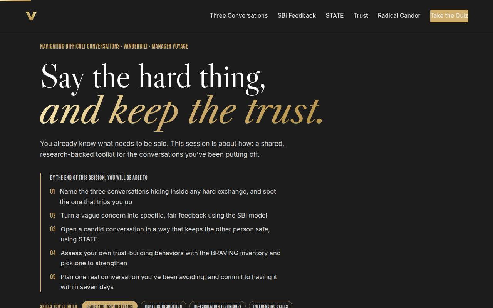
Objectives Full 2 min · Core 1
Set the contract: five capabilities, ending in a real conversation with a date on it.
Say
“Most managers already know WHAT they need to say. Where it falls apart is HOW. In the next hour you get one shared toolkit from the best research there is, and you leave with one real conversation planned and dated. Not a hypothetical. Yours.”
Do
- Read the five objectives in plain language, briskly.
- Land hard on the fifth: this session ends with a plan for a REAL conversation, not a worksheet.
- Name the sources once for credibility: Harvard's negotiation faculty, CCL, Crucial Conversations, Brené Brown, Kim Scott, McKinsey, SHRM.
Ask
“Show of hands, no details: who has a conversation they've been putting off for more than a month?”
Expect:
- Most hands go up, some sheepishly
- A few brave laughs and 'more than one'
- Some hands stay down out of caution
Respond: Acknowledge the hands: 'That's normal, and that's the raw material for today.' If hands stay down, add: 'If yours is down, either you're current, which is rare, or it's private, which is fine. Everything today works either way.'
Validate: Learners can say what the capstone will be (a planned, dated conversation).
Watch for: Eye-rolls at 'another soft-skills training': the objectives are the counter, every one is a concrete behavior.
Transition: “Here's the road: eight ideas, each one building toward that conversation.”
Core path: Core: objectives 1 and 5 out loud; the rest on screen.
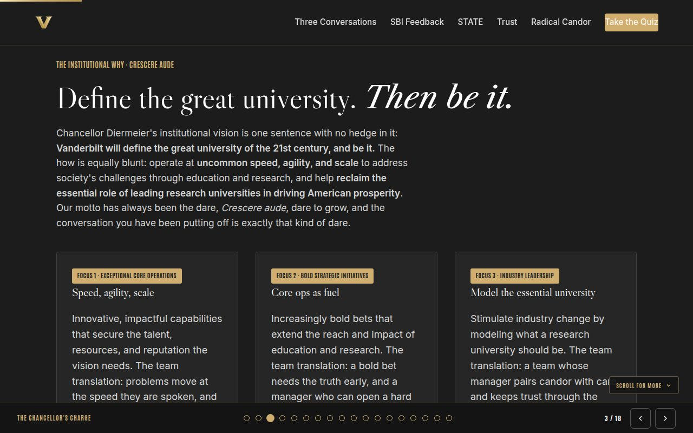
The Chancellor's charge Full 3 min · Core skip
Connect the course to the institutional vision: at a university committed to speed and bold bets, a manager's candor is infrastructure, not a personal preference.
Say
“Before the toolkit, one minute on why the institution cares whether you have this conversation. Chancellor Diermeier's vision is one sentence: Vanderbilt will define the great university of the 21st Century and be it. That takes speed, bold bets, and values leadership, and all three run through teams where hard things get said early and trust survives the saying. The conversation you have been avoiding matters beyond your team.”
Do
- Read the vision sentence verbatim; give it a beat.
- Walk the three focus cards, one line each, landing on each 'team translation.'
- Point at the flywheel card: trust-heavy teams keep problems small, and small problems never reach the reputation. Don't linger; the evidence comes next.
Transition: “So the university needs this conversation to happen. Here's the road we'll take to get you there.”
Core path: Core: read the vision sentence, gesture at the three focuses, move on; under a minute.
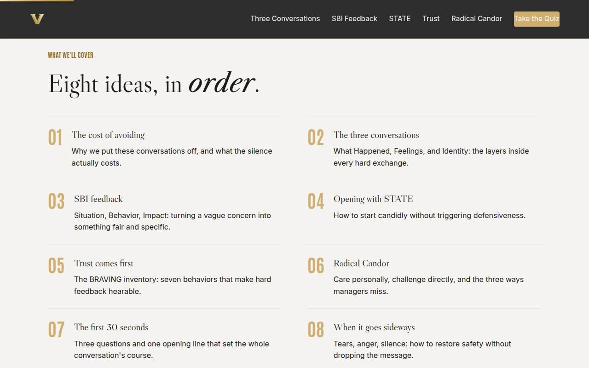
Agenda Full 1 min · Core skip
Show the arc once so learners can place each tool as it arrives.
Say
“Eight ideas, four moves: why these talks are hard, what to actually say, what makes people able to hear it, and how to open, and recover, in the room.”
Do
- Walk the eight items in one breath each.
- Point out the shape: why it's hard (01-02), what to say (03-04), what makes it hearable (05-06), how to open and recover (07-08).
Validate: None needed; this is orientation.
Watch for: Don't teach here. If you're explaining a framework on the agenda slide, you're stealing time from its real slide.
Transition: “Start with the uncomfortable math of putting it off.”
Core path: Core: skip entirely; the deck's structure carries it.
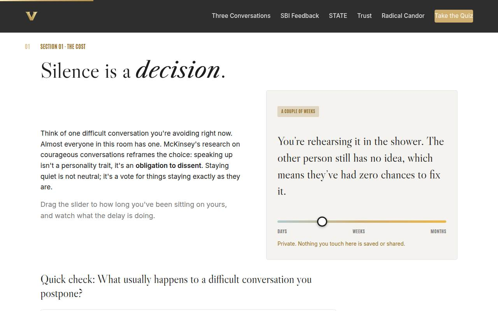
01 · The cost of avoiding Full 6 min · Core 4
Make avoidance feel expensive instead of safe, and get each learner to privately name their real conversation.
Say
“Think of the conversation you're avoiding right now. Here's the uncomfortable part: while you wait, the behavior becomes a pattern, your silence tells them it's fine, and the conversation you eventually have is bigger than the one you skipped. McKinsey's researchers put it bluntly: speaking up isn't a personality trait, it's part of the job.”
Do
- Give the McKinsey reframe: courage isn't a trait, it's an obligation to dissent. Silence is a decision.
- Demo the avoidance slider on the projector; drag it slowly from days to months and let the readout land.
- Send them to their devices: drag it to YOUR number. Emphasize it's private.
- Run the quick check, then the 3-minute solo activity: write down the conversation, who and what, on paper or notes app.
- Insist they keep the note in reach; every section from here uses it.
Ask
“What do we tell ourselves in the moment we decide not to raise it?”
Expect:
- 'It's not the right time' / 'I'll do it after the busy season'
- 'Maybe it'll fix itself' / 'It's not that big a deal'
- 'I don't want to demotivate them' / 'They're going through a lot'
Respond: Collect three or four, then name the pattern: every one of these is a kindness story we tell about a decision that isn't kind. The person never gets the chance to fix what they can't see.
Debrief: The cheapest version of this conversation is the one you have earliest. Every week of delay raises the price.
Validate: Quick check answered correctly by the room; every learner has visibly written something down.
Watch for: Learners writing nothing because 'mine's too messy.' Reframe: messy is exactly what the toolkit is for; start with the least messy one you've got.
Transition: “So why do we still avoid them? Because there's more happening in a hard conversation than the topic. Three things, actually.”
Core path: Core: skip the slider demo on the projector; straight to their devices, then the written note. The note is non-negotiable.
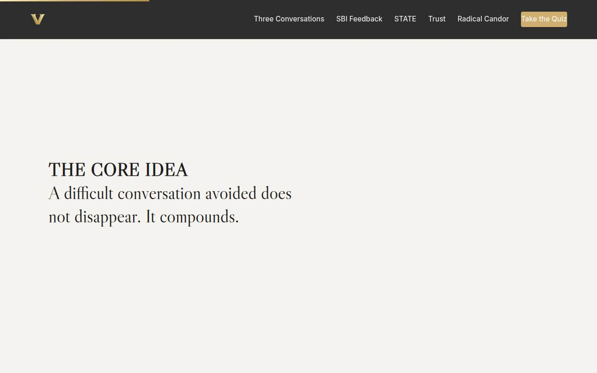
Manifesto Full 1 min · Core skip
One beat of stillness to lock the core idea before the toolkit starts.
Say
“A difficult conversation avoided does not disappear. It compounds.”
Do
- Let the line animate word by word. Say nothing until it finishes.
- Read it once, slowly, then advance.
Validate: None; this is pacing.
Watch for: The urge to talk over it. Don't.
Transition: “Here's the model that explains why they feel so hard.”
Core path: Core: skip; say the line yourself as you pass it.
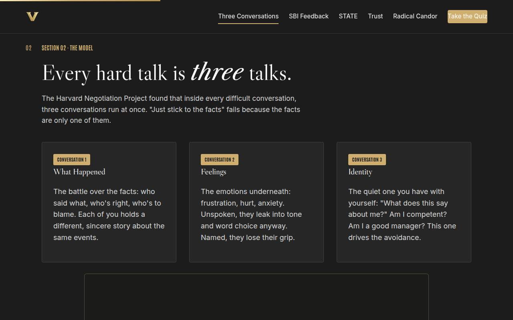
02 · The three conversations Full 10 min · Core 7
Install the session's diagnostic lens: every hard exchange runs a facts, a feelings, and an identity conversation at once.
Say
“The Harvard Negotiation Project studied thousands of hard conversations and found the same three running underneath every one. There's the What Happened conversation, the battle over facts. There's the Feelings conversation, the emotion underneath that leaks into your tone whether you name it or not. And there's the Identity conversation, the one you have with yourself: what does raising this say about me? That third one is usually why the conversation isn't happening.”
Do
- Teach the three cards briskly: What Happened, Feelings, Identity. Spend your emphasis on Identity; it powers avoidance.
- Play the first ~5 minutes of the Simon Sinek video if on the Full path; preview your stop point in advance.
- Send them to 'Name that conversation' on their devices: five lines, label each.
- Watch the room's scores; item 4 (hurt wearing a fact costume) catches the most people. Call that out.
- Run the group activity: pairs share which conversation trips them up most, one line back per pair.
Ask
“Why does 'just stick to the facts' fail as advice?”
Expect:
- Because the other person has different facts
- Because feelings come out anyway, in tone
- Because the real fight isn't about the facts
Respond: All three are right. Facts are one conversation out of three; the advice ignores two-thirds of what's happening. And when a facts argument loops in circles, it's almost always an identity argument in disguise.
Debrief: You can't respond to the right conversation until you can tell which one you're in. That's the skill you just practiced.
Validate: 4+ of 5 on the labeler for most of the room; pairs can name their trip-wire conversation.
Watch for: The word 'Identity' getting read as jargon. Translate it every time: it's the 'what does this say about me?' voice.
Transition: “Now the toolkit turns practical: how do you say the hard content itself? Three letters: SBI.”
Core path: Core: cut the video (assign as follow-up) and the pair share; keep the teach and the labeler.
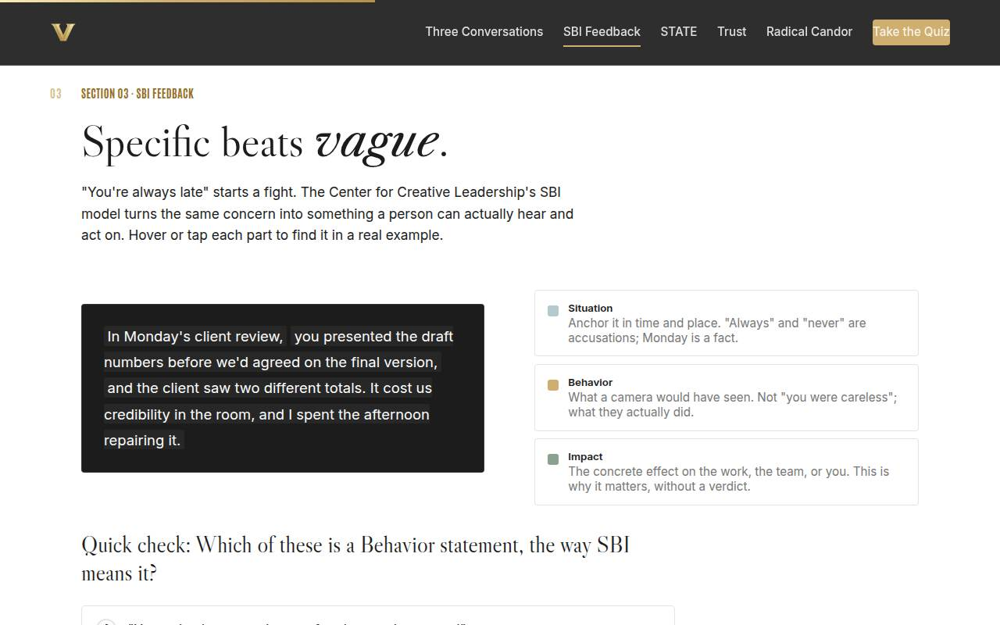
03 · SBI feedback Full 7 min · Core 5
Replace vague accusation with the Situation-Behavior-Impact structure, and install the camera test for behavior.
Say
“'You're always late' starts a fight. Not because it's too honest, but because it's not honest enough: no time, no place, no specifics, just a verdict. The Center for Creative Leadership's fix has three parts. Situation: when and where, so it's a fact, not a pattern-accusation. Behavior: what a camera would have seen. Impact: what it cost, concretely. Watch what happens to the same complaint when it goes through that machine.”
Do
- Walk the anatomy on the projector: hover Situation, then Behavior, then Impact, reading each highlighted piece.
- Teach the camera test out loud: if a camera couldn't have recorded it, it's a judgment, not a behavior.
- Run the quick check; option C ('you clearly don't respect the team's time') is the useful wrong answer, it's a mind-read.
- Send them to the solo activity: rewrite their own avoided concern as SBI, next to their note from Section 01.
Ask
“What's the actual difference between 'you're unreliable' and 'the report went out with last quarter's numbers'?”
Expect:
- One is opinion, one is fact
- You can argue with a label but not with the numbers
- One attacks the person, one describes the work
Respond: Exactly: one is contestable and one is checkable. People defend themselves against verdicts; they solve problems. SBI keeps the problem the problem.
Debrief: The camera test is the whole slide: if a camera couldn't have seen it, don't say it as if it's a fact.
Validate: Quick check correct; learners have a written SBI version of their own concern.
Watch for: SBI statements that smuggle the verdict back in ('...and it was really disappointing'). Flag it kindly: impact is a cost, not a grade.
Transition: “Structure alone isn't enough; you can deliver a perfect SBI and still watch it land like an attack. Let's feel that difference.”
Core path: Core: anatomy plus quick check, and the rewrite happens inside the Lab next slide instead of separately.
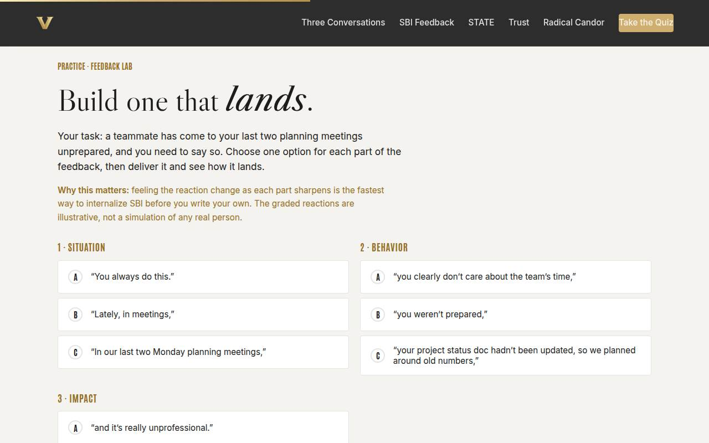
Feedback Lab Full 8 min · Core 6
Let learners feel how the reaction changes as each SBI part sharpens; the reaction is the teacher.
Say
“Same concern, three ways to say each part. Your job: assemble the feedback and watch how it lands. I'll go first, and I'm going to do it badly on purpose, because you've all heard this version.”
Do
- Frame the scenario: a teammate came unprepared to the last two planning meetings, and you're saying so.
- On the projector, deliberately build the WORST version (A-A-A) and deliver it. Let the defensive reaction land on the room.
- Send them to their devices: build and deliver their own, iterate until it lands.
- Circulate. Ask people showing a mid-tier result which part is costing them.
- Pull the room back and ask who got the strong reaction, and what they changed to get it.
Ask
“When I delivered the worst version, what did the reply defend: the work, or the person's character?”
Expect:
- Their character, they brought up staying late
- They never addressed the actual problem
- They counter-attacked
Respond: Right. Attack character, and character is what gets defended. The status doc never came up. Vague feedback isn't gentler; it just changes the subject from the problem to the person.
Debrief: The reaction you get is diagnostic: defending the work means your feedback was about the work. Defending themselves means it wasn't.
Validate: Most of the room reaches the strong (8-9/9) outcome within the time box.
Watch for: Option-B-everywhere players getting a mediocre result and shrugging: push them to find WHICH slot is weakest, that's the diagnostic habit.
Transition: “You now have the content. The next tool is the delivery: how you open your mouth without raising their shields.”
Core path: Core: skip your projector demo of the worst run; one sentence of framing, straight to devices.
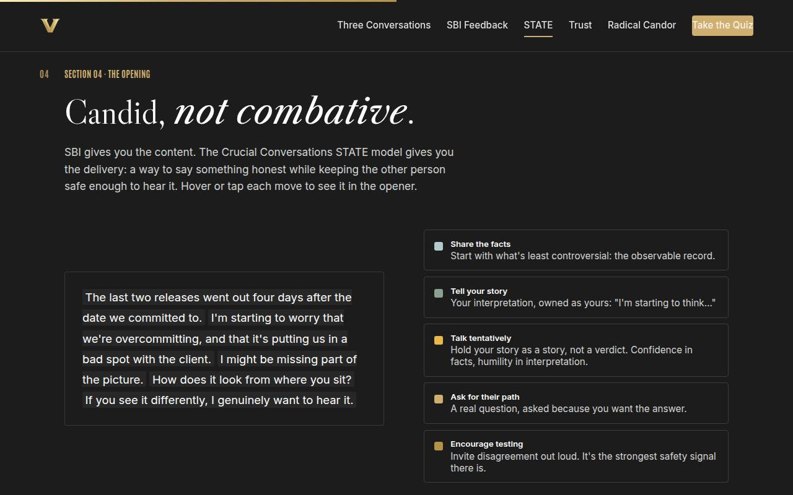
04 · Opening with STATE Full 8 min · Core 4
Give learners a safe-opening pattern (STATE) and one real out-loud rep of their own opener.
Say
“SBI is what you say. STATE is how you say it without raising their shields. Start with facts, because facts are the least controversial thing you own. Then your story, held as a story: 'I'm starting to think,' not 'clearly you.' Then a real question. The magic words are the tentative ones; they're not weakness, they're accuracy. You're sure about the dates; you're guessing about the why.”
Do
- Walk the anatomy: Share facts, Tell your story, Talk tentatively, Ask, Encourage testing. Read the full opener aloud once, straight through.
- Play the Crucial Conversations 6-minute preview on the Full path.
- Run the quick check on why facts come first.
- Then the main event: the pair rep. Each person opens THEIR conversation (from their note) out loud; partner answers with exactly one line: 'felt safe' or 'felt like an accusation,' and why.
- Time it tightly: 2 minutes each plus swap.
Ask
“Listen to the difference: 'You don't care about deadlines' versus 'I'm starting to worry we're overcommitting.' What changed?”
Expect:
- The second one owns it as your view
- First one is about them, second is about the situation
- The second leaves room to be wrong
Respond: All of that. The first sentence is a verdict they must overturn; the second is a hypothesis they can add to. Same concern, opposite conversations.
Debrief: Candor is measured at the listener's ear. The pair rep you just did is the only reliable test of your opener; the mirror lies to you.
Validate: Every learner has said their opener out loud once and received the one-line verdict.
Watch for: Pairs slipping into discussing the situation instead of practicing the opener. Redirect: 'The content isn't the exercise; the first four sentences are.'
Transition: “But here's the catch: the best opener in the world lands on deaf ears if the trust account is empty. That's the next stop.”
Core path: Core: cut the video; keep the anatomy, the check, and ONE round of the pair rep (one partner speaks, not both) if minutes allow, else assign the mirror version as homework.
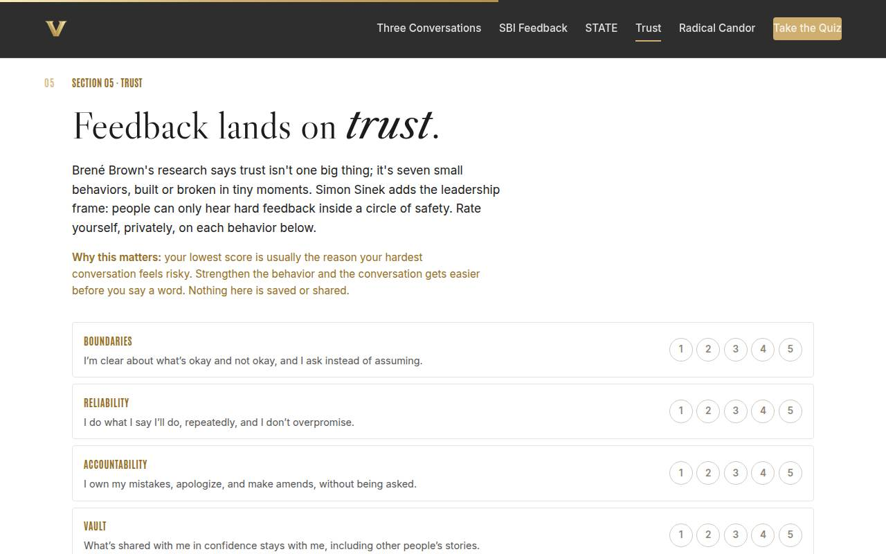
05 · Trust and BRAVING Full 8 min · Core 4
Shift trust from an abstraction to seven rateable behaviors, and have each learner privately find their growth edge.
Say
“Why does the same sentence land fine from one manager and like a knife from another? The difference isn't the sentence; it's the account it's drawn on. Brené Brown's research breaks trust into seven behaviors, small, boring, daily ones. Rate yourself honestly on each; nobody sees your numbers. Your lowest score is probably the reason your hardest conversation feels dangerous.”
Do
- Frame with Sinek: people hear hard feedback only inside a circle of safety, and the circle is built before the conversation, not during.
- Introduce BRAVING as Brené Brown's anatomy of trust: seven behaviors, built or broken in small moments.
- Send them to the scorecard: rate all seven, privately. Emphasize nobody will share numbers.
- When the growth edge appears, give a quiet minute to read their behavior's suggestion.
- Run the pair activity: name ONE behavior to strengthen this quarter, no scores, no stories, then popcorn behaviors to the room and name the pattern you hear.
Ask
“Without sharing scores: which of the seven behaviors, when a MANAGER breaks it, kills trust fastest?”
Expect:
- Vault, they repeat what you told them in confidence
- Reliability, they promise and don't deliver
- Nonjudgment, asking for help gets held against you
Respond: Vault usually wins the vote, and notice why: one leak reclassifies every future conversation as unsafe. Whatever the room picks, the lesson is the same: trust breaks by behavior, so it rebuilds by behavior too.
Debrief: Trust isn't a vibe, it's seven behaviors, which means it's trainable. Pick one; that's your quarter.
Validate: All seven rows rated (the tool won't show a result otherwise); each learner can name their one behavior.
Watch for: This is where someone may go quiet or emotional; trust inventories touch real relationships. Don't spotlight anyone; the exercise is private by design.
Transition: “With trust as the ground, here's the map for the feedback itself: two axes, four quadrants, one worth aiming at.”
Core path: Core: scorecard only, skip the pair share; assign both videos (Anatomy of Trust, Sinek) as the week's watch list.
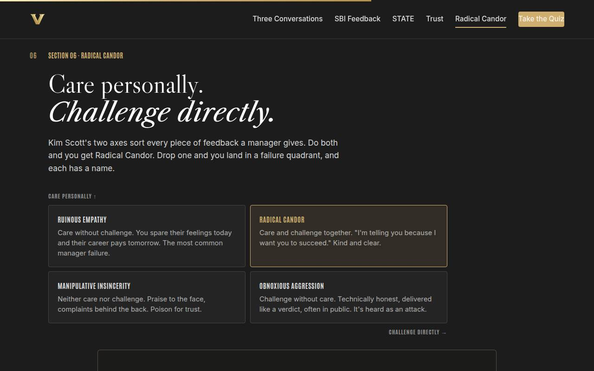
06 · Radical Candor Full 8 min · Core 5
Give learners the two-axis map for feedback and the self-knowledge of their own failure quadrant under stress.
Say
“Kim Scott's grid has two axes: do you care personally, and do you challenge directly. Do both and you get Radical Candor. Care without challenge is Ruinous Empathy, the most common manager failure, where your comfort gets protected and their career pays. Challenge without care is Obnoxious Aggression, technically true and completely unhearable. Neither is Manipulative Insincerity, and that one's poison. Every piece of feedback you've ever given lives somewhere on this grid.”
Do
- Teach the grid from the slide: the two axes first, then the failure quadrants by name. Spend your emphasis on Ruinous Empathy; it's the room's most common drift.
- Play the 6-minute Kim Scott video on the Full path (or trim to the story of getting the 'um' feedback).
- Send them to the quadrant sort: four scenarios, label each.
- Run the group activity: private vote on their stress-drift (soften vs. push), pairs name the trigger, trade one counter-move.
- Close with Scott's line: candor is measured at the listener's ear.
Ask
“Private vote, then hands: under stress, which way do YOU drift, soften too much, or push too hard?”
Expect:
- A softener majority in most rooms
- A few honest pushers
- Some 'depends who it is', seniority changes the drift
Respond: The 'depends who it is' answer is gold: name it for the room. Most of us soften upward and push downward, which means the axis you're missing changes with the org chart. Your counter-move has to know that.
Debrief: The grid's punchline: withholding the feedback is the unkind option. Ruinous Empathy feels like kindness and costs them their growth.
Validate: 3+ of 4 on the sort for most of the room; each learner can name their drift and one counter-move.
Watch for: Someone proudly claiming Obnoxious Aggression as 'just being honest.' Use the axis language, not judgment: honesty was never the missing axis; care was.
Transition: “You know the what, the how, and the ground it lands on. Now compress it into the moment that decides everything: the first 30 seconds.”
Core path: Core: cut the video and shrink the group activity to the private vote plus one volunteered counter-move.
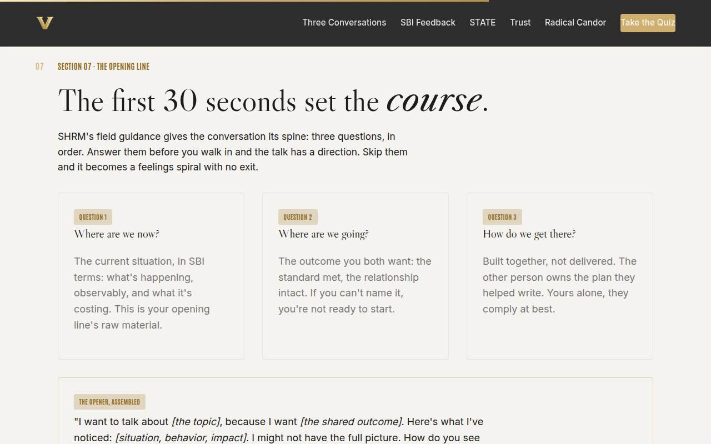
07 · The first 30 seconds Full 6 min · Core 4
Assemble everything into one rehearsable opener, structured by SHRM's three questions.
Say
“SHRM's field guidance boils the whole conversation down to three questions: where are we now, where are we going, and how do we get there. Answer them before you walk in and you have a spine. Skip them and you have a feelings spiral with no exit. Look at the opener on the card: purpose first, facts second, their view invited before yours hardens. Every framework from today is inside that one paragraph.”
Do
- Teach the three questions as the conversation's spine: where are we, where are we going, how do we get there.
- Read the assembled opener from the gold card aloud, slowly. Point out each framework inside it.
- Run the quick check ('We need to talk' is the beloved wrong answer; let the room laugh at it).
- Solo activity: fill the opener's brackets for THEIR conversation and answer the three questions in a line each.
- Push the timing point: scheduled and private beats ambushed and public, every time.
Ask
“Why does 'We need to talk' fail before the conversation even starts?”
Expect:
- It triggers panic, they imagine the worst
- No topic, no purpose, just threat
- It gives them hours to build defenses
Respond: All three. Four words that maximize dread and minimize information. The fix costs one sentence: name the topic and the shared purpose in the same breath.
Debrief: An opener written now, calm, is what your mouth reaches for later, stressed. That's why we write it in the room.
Validate: Quick check correct; each learner has a written, bracket-filled opener.
Watch for: Perfectionism stalls: learners polishing the opener instead of finishing it. A B-plus opener said out loud beats an A-plus one still in drafts.
Transition: “One more tool. Because even the perfect opener sometimes meets tears, anger, or dead silence.”
Core path: Core: teach the card and the check; the bracket-filling merges into the capstone.
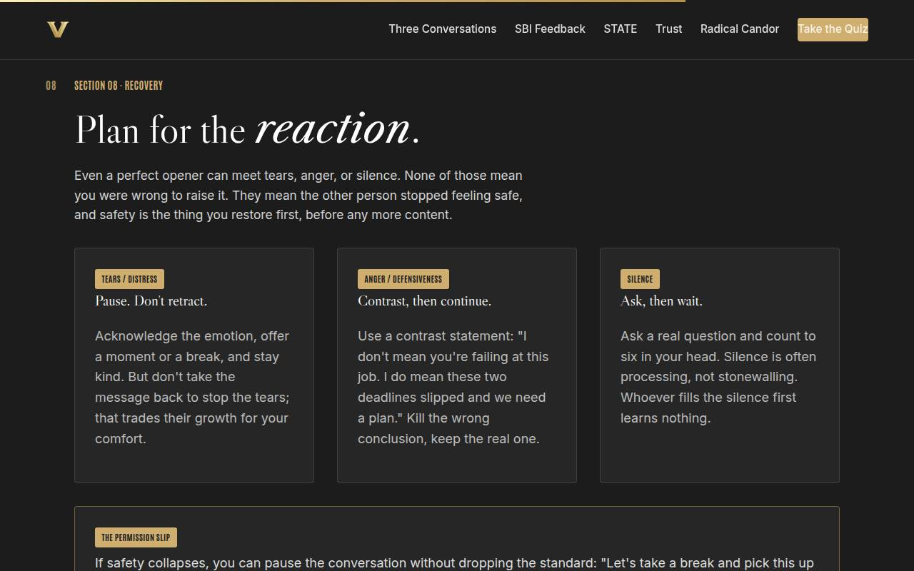
08 · Sideways & listening Full 6 min · Core 4
Pre-load the three recovery moves so a hard reaction doesn't end the conversation, and install the listening turn that follows your ask.
Say
“Your opener can be perfect and still meet tears, anger, or silence. None of those mean you were wrong to raise it. They mean safety dropped, and safety is what you restore first. And when they finally answer your question, the conversation flips: it's your turn to listen. What you do in that turn, paraphrase, follow up, acknowledge, decides whether they're ever honest with you again.”
Do
- Walk the three reaction cards: tears (pause, don't retract), anger (contrast statement), silence (ask, then count to six).
- Demo a contrast statement out loud with real delivery: 'I don't mean you're failing. I do mean these two deadlines slipped and we need a plan.'
- Read the permission slip card: pausing a conversation is not losing it.
- Then the listening turn: teach the three moves on the gold card (paraphrase first, one real follow-up, acknowledge before countering).
- Run the quick check, then the pair drill: contrast statement plus the 60-second listen-only rep (paraphrase and one question, no advice).
Ask
“Why is 'forget it, it's not a big deal' the worst possible response to someone getting upset?”
Expect:
- The problem survives, only the conversation dies
- It teaches them that emotion ends feedback
- You'll be back here in a month, angrier
Respond: All true, and there's a quieter cost: it converts their trust in your word. If this wasn't a big deal, what else have you said that you didn't mean?
Debrief: A paused conversation resumed is a success, and the listening turn is where trust gets banked for the next one.
Validate: Quick check correct; each learner has a drafted contrast statement, and the pair drill's listeners stayed inside paraphrase-plus-question.
Watch for: Contrast statements that retract the message, and 'listeners' who slide into advice within ten seconds. Name both kindly; they're the two default failures.
Transition: “That's the toolkit, all of it. Let's see what stuck.”
Core path: Core: teach the cards, the listening card, and the check; the contrast statement gets drafted inside the capstone, and the listen drill becomes the week's homework with their accountability partner.
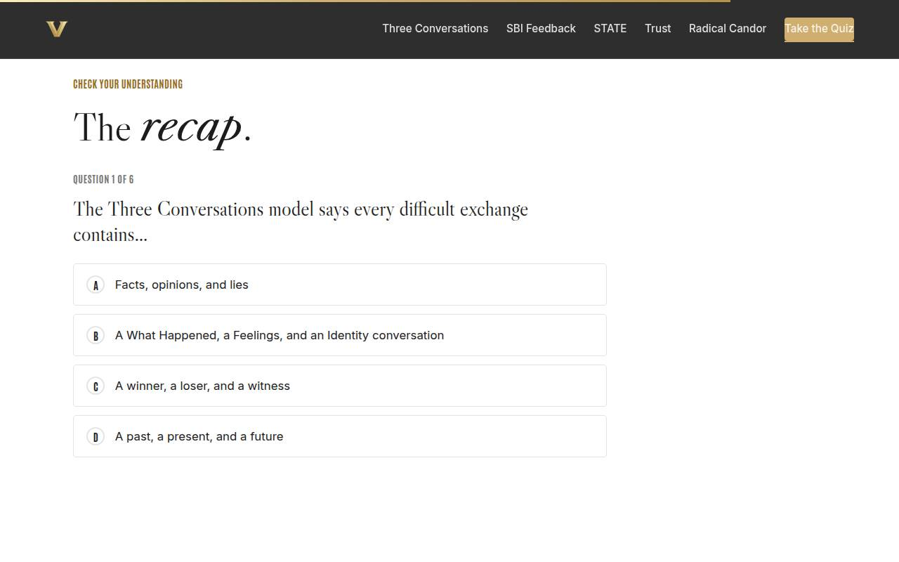
Recap quiz Full 4 min · Core 4
Score the session's knowledge against the objectives before the capstone applies it (Kirkpatrick Level 2).
Say
“Six questions, one per tool. This isn't a grade; it's a check on what's loaded before you build the plan that matters.”
Do
- Everyone takes it on their own device, all six questions.
- Ask for hands on 5-or-better; celebrate briefly.
- For any question the room visibly missed, do a 30-second reteach from the relevant slide, not a lecture.
Validate: Room mode at 5/6 or better. The quiz maps one-to-one onto the objectives, so misses tell you exactly what to reteach.
Watch for: Racing ahead to finish first. Frame it as a mirror, not a race; wrong answers here are free, wrong answers in the real conversation aren't.
Transition: “Now the reason we're all here. Everything you've written today converges on one page.”
Core path: Core: keep at full length; this is the objectives' evidence.
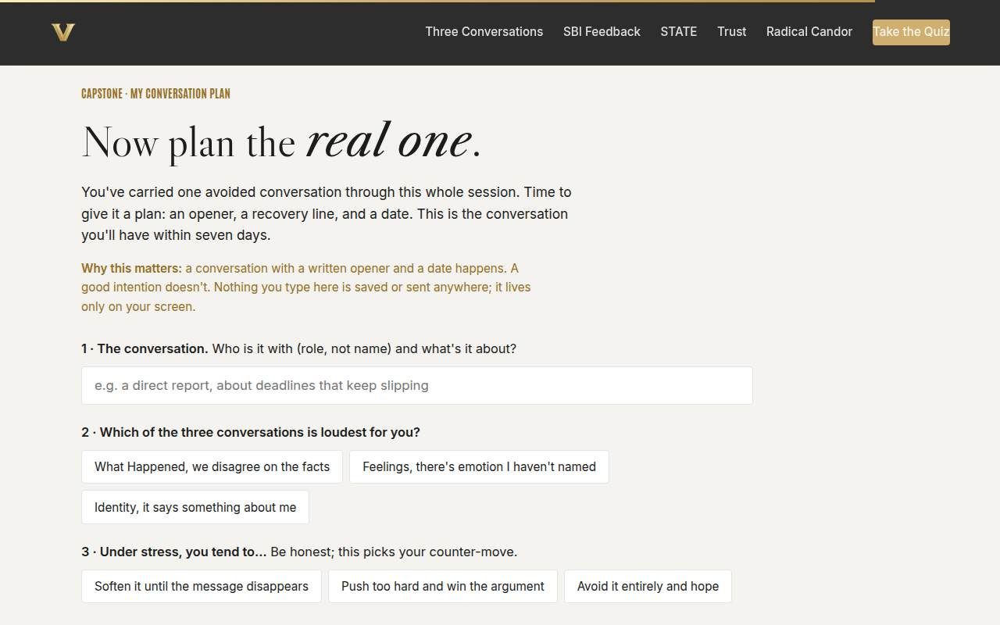
Capstone · My conversation plan Full 8 min · Core 7
Convert the session into one dated, planned, real conversation: the transfer artifact and the Level 3 seed.
Say
“You've carried one conversation through this whole session. Now it gets a plan: your opener, your drift and its counter-move, your recovery line, and a date inside the next seven days. Fill it in honestly, copy it somewhere you'll see tomorrow, and then do the two things that make it real: send the calendar invite, and tell one colleague you're having it.”
Do
- Frame it: the notes they've kept all session become a plan with an opener, a counter-move, a recovery line, and a date.
- Give quiet time. This is individual work; resist the urge to talk over it.
- Circulate for stuck learners: the 'who' field wants a role, not a name.
- When plans are built, push the copy button moment: get it out of the browser and into their notes or email.
- Then the commitment mechanics: calendar invite sent before they leave the room, and one colleague told.
Ask
“What makes a planned conversation actually happen, when a good intention doesn't?”
Expect:
- A date on the calendar
- Someone else knowing about it
- Having the first sentence ready
Respond: You just listed the plan's last three rows. Social accountability roughly doubles follow-through; that's why telling one colleague is in the commitment, not optional garnish.
Debrief: A conversation with a written opener and a date happens. Everything else was preparation for this page.
Validate: Every learner builds a plan (all four fields) and copies it out. That artifact is your Level 3 seed; the 7-day pulse follows up on it.
Watch for: Red flags in circulation: if someone's conversation involves policy violations, harassment, or safety, quietly route them to HR as the first step, not the toolkit.
Transition: “Two minutes of reference material, and then the only step that matters.”
Core path: Core: protect this at full length minus one minute of framing. Never cut the capstone.
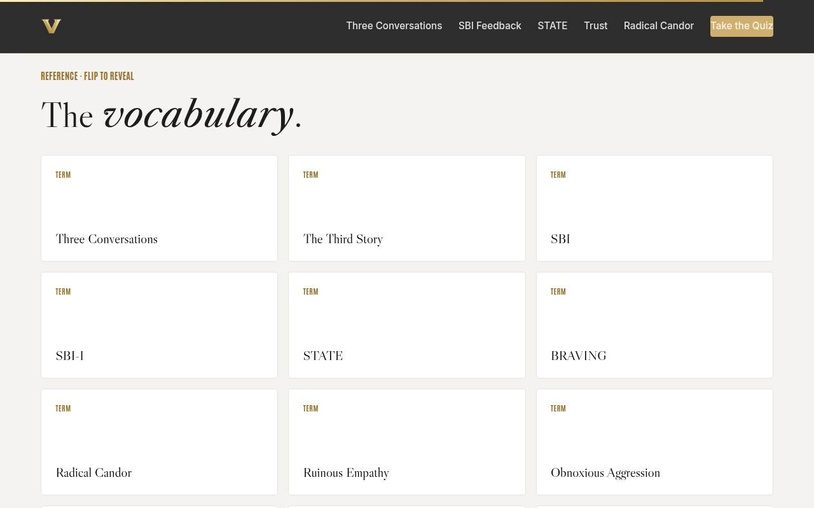
Glossary Full 1 min · Core skip
Signpost the reference layer; it lives here for after the session.
Say
“Every term from today lives here, flip cards, whenever you need the vocabulary back. It'll still be here the night before your conversation.”
Do
- Flip one card on the projector (Contrast Statement is a good pick).
- Tell them it's all here whenever they need the vocabulary back.
Validate: None; reference material.
Watch for: Don't tour all fourteen cards; one flip makes the point.
Transition: “Last slide. One step left.”
Core path: Core: skip; point at it verbally from the closing slide.
Closing · commitment Full 3 min · Core 3
Convert plans into public commitments and close the loop on the session's one next step.
Say
“Here's everything in one sentence: name the real conversation, open with facts, hold your story lightly, keep them safe, and don't let your silence vote for the problem. You have an opener, a recovery line, and a date. The only step left is the one this room can't do for you. Before you go: who, and when? Say it out loud.”
Do
- Read the featured card: the one next step is THE conversation, within 7 days.
- Run the fist-to-five (Level 1): 'On a fist to five, how ready do you feel to have your conversation?' Scan and remember the room's number for your session log.
- Run the commitment round: who (role) and when, out loud or in the chat. Keep it fast, popcorn style.
- Point at the cheat sheet button; suggest printing it and keeping it by the keyboard.
- Tell them the 7-day pulse is coming and what it will ask.
- Land the last line and stop talking on time.
Ask
“Who, and when? Around the room, one line each.”
Expect:
- 'A direct report, Thursday morning'
- 'A peer, before Friday'
- Some hesitation or 'I need to think about it'
Respond: Thank each one, no commentary. For hesitators: 'Name just the day; the rest is already in your plan.' If someone genuinely isn't ready, let it go gracefully; the 7-day pulse gives them a second chance to close the loop.
Debrief: The session's success metric isn't in this room; it's the conversations that happen this week. The pulse in seven days collects it.
Validate: Fist-to-five mostly 3+ (reaction, Level 1); a majority state a who-and-when out loud or in chat (transfer seed). Count both; with the 7-day pulse they're your evidence chain.
Watch for: Commitment dodges ('I'll find the right moment'). Gently convert one or two: 'Which day?' A day makes it real; a moment never arrives.
Transition: “Go have it. And when it's done, tell the colleague you named how it went. That debrief is where the skill becomes yours.”
Core path: Core: keep at full length; the commitment round IS the ending.
Generated from facilitator/notes.json. The on-screen facilitator edition lives at ./ alongside this guide.